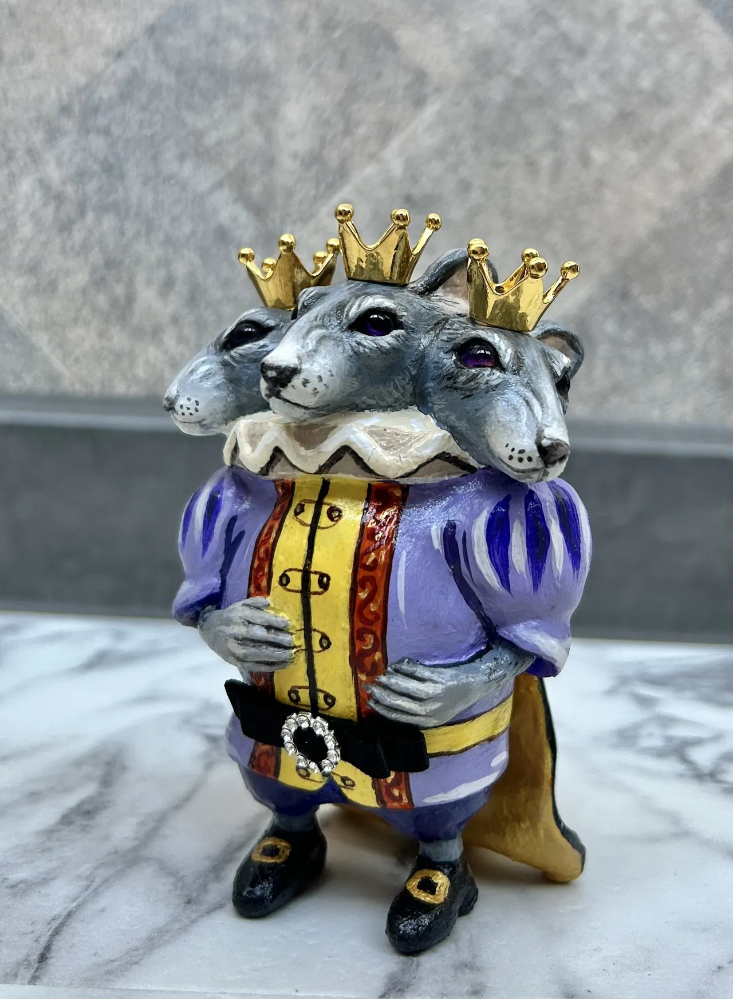

Бестиарий
Жители
Авторские работы Веры. Здесь можно познакомиться с каждым Жителем, рассмотреть детали и узнать его историю.

Белый Дракон
Он приходит из мест, где снег лежит на камнях даже летом, а ветер помнит имена первых звёзд. Белый Дракон не охраняет сокрови…

Сирин
Сирин знает песни, которые нельзя записать нотами. Они появляются в памяти на рассвете и исчезают, если попытаться произнести…

Щелкунчик Эрнст
Эрнст служил при дворе, которого больше нет ни на одной карте. Каждую зиму он выходит на караул у окна и следит, чтобы в доме…

Крысиный Король
Он носит короны так, будто каждая из них досталась ему в честном бою. Крысиный Король любит порядок, громкие истории и тёплые…
Карусельные Кони
Когда ярмарка закрывается и музыка стихает, они продолжают путь по невидимой дороге. Каждый Конь хранит цвет одного праздника…